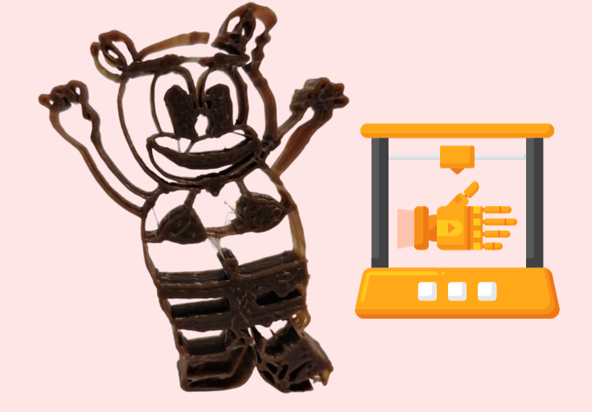
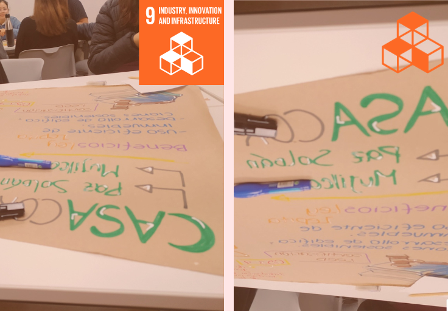
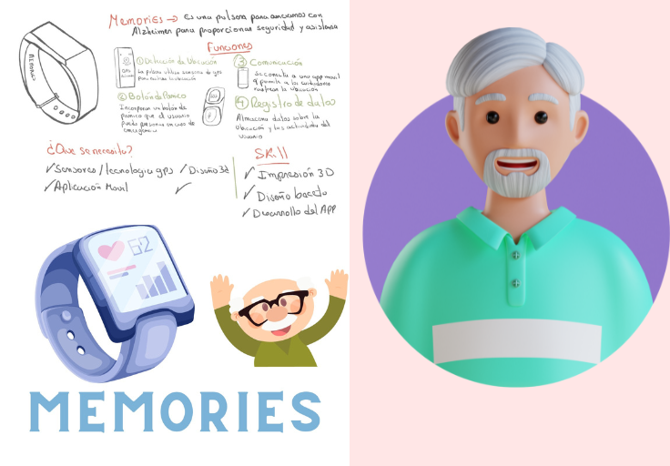
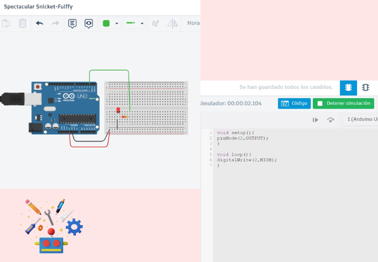
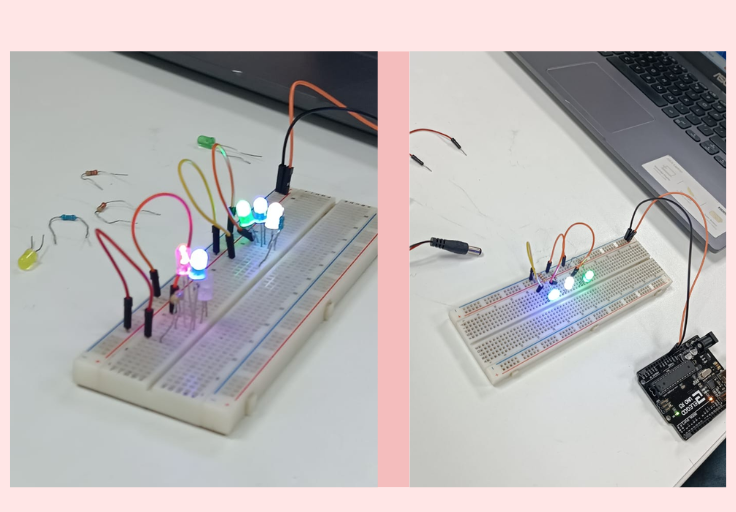
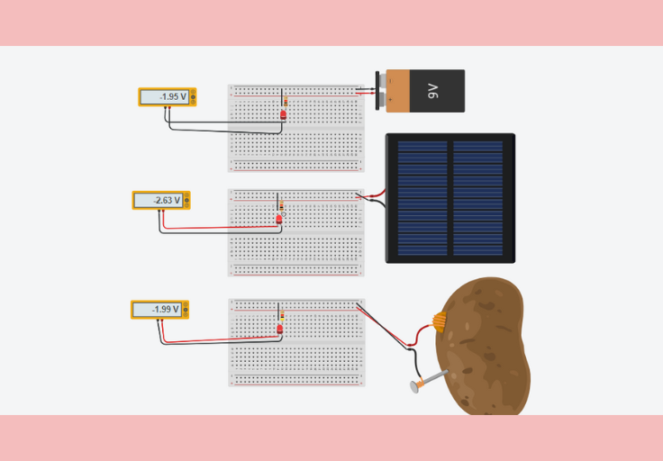

Impresión 3D
Este fue nuestro primer proyecto donde me sentí muy a gusto con mis compañeros de equipo, nos divertimos mucho al crear nuestro personaje, buscando la forma que se pudiera imprimir, al final lo imprimimos y no quedó tan perfecto, pero las risas no faltaron 😛😆

ODS 9
>Este fue un proyecto bastante entretenido y retador porque la ODS que nos tocó no era familiar para ninguna de mi equipo, pero me gusto mucho trabajar con cada miembro del grupo, aunque no encontré la foto pudimos sacar un buen proyecto, que fue una ley para que las casas abandonadas puedan reestructurarse y no seguir afectando la población

Propuesta de proyecto "Memories"
Memories es un proyecto pensado en las personas de la tercera edad, específicamente las que sufren Alzheimer. Es una pulsera para que no se pierdan, con algunas funciones como el botón de pánico, GPS y recordatorio para facilitar a ellos y a sus familiares este proceso de la enfermedad

Encendiendo un LED en tinkercad
Se configuró un pin digital de una placa Arduino como un pin de salida y se estableció su estado en alto (HIGH). Esto generalmente se hace para controlar dispositivos o circuitos conectados a ese pin, como encender un LED o activar un componente en el circuito.

Encendido de LED "Presencial"
Se realizo 3 ejercicios, el encendido de 3 luces Led con resistencias de diversas medidad, también pudimos ver las diferencias entre una conexión en serie (vertical), donde los LED se conectan uno después del otro, y una conexión en paralelo (horizontal), donde cada LED tiene su propia conexión independiente a la fuente de alimentación

Utilizando diversas fuentes de energias
En esta sesión virtual vimos como encender con diversas fuentes de energia, utilice un panel solar, una pila y una papa, modificando la resistencia se logró encender, algunos con mayor intensidad de otros

Encendido de Led en secuencia
A esa clase falte 😫 pero mis compañeros me indicaron que se realizó el encendido en led dejando un espacio de tiempo por cada led con ayuda de la progrmación en codigo.
.png)
Control Secuencial de LEDs con Arduino
se enseñó cómo programar una placa Arduino para controlar LEDs o dispositivos conectados a los pines 2, 3 y 4 de la placa. Se explicó cómo configurar los pines como salidas, cómo utilizar digitalWrite para encender y apagar los LEDs, y cómo usar delay para controlar el tiempo que los LEDs permanecen encendidos o apagados.